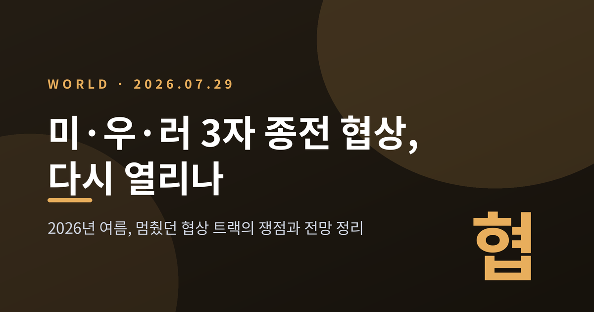
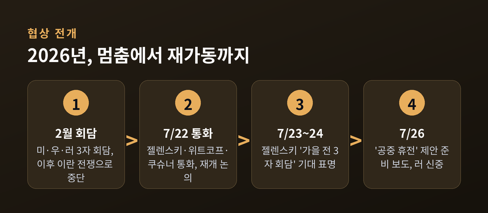
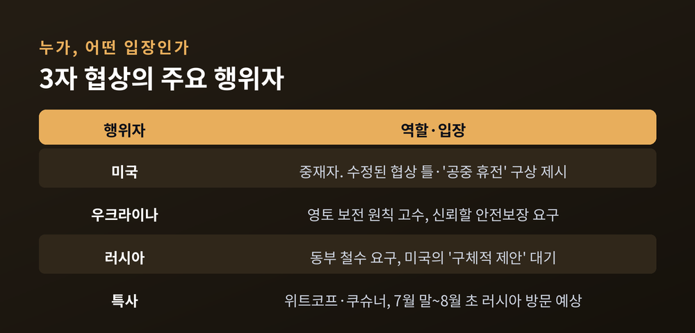
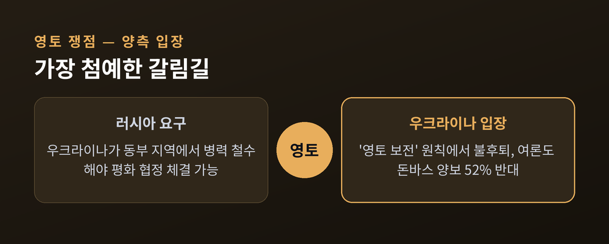
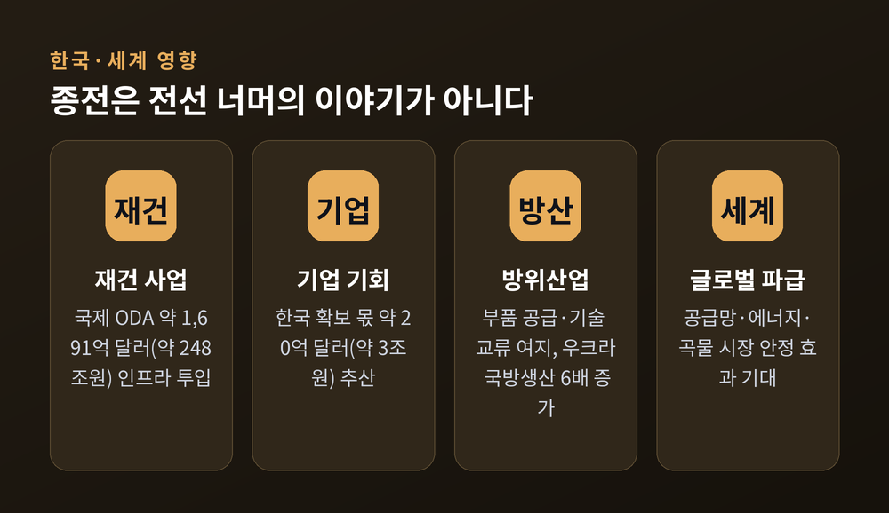
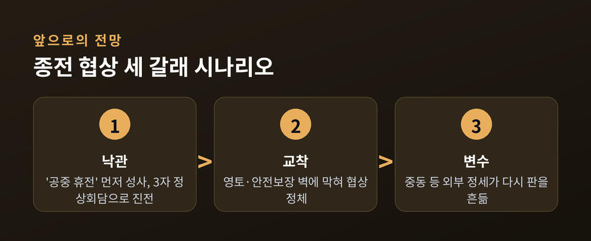

이번 글에서는 2026년 7월 다시 움직이기 시작한 미국·우크라이나·러시아 3자 종전 협상 트랙을 정리해 보겠습니다. 무슨 일이 있었는지, 왜 다시 협상이 가동됐는지, 그리고 어떤 쟁점이 남아 있는지 차례로 짚어보려 합니다.

2026년 7월, 멈춰 있던 종전 협상이 다시 물살을 탔습니다.
7월 22일, 볼로디미르 젤렌스키 우크라이나 대통령이 트럼프 미국 대통령의 특사 스티브 위트코프, 재러드 쿠슈너와 전화 통화를 했습니다. 두 특사는 백악관이 협상을 위한 '수정된 틀'을 준비 중이며, 여기에 '공중 휴전' 구상이 담겨 있다고 전했습니다.
이튿날인 7월 23일, 젤렌스키는 아일랜드 총리와의 공동 기자회견에서 "가을 전에" 미·우·러 3자 회담이 열릴 것으로 기대한다고 밝혔습니다. 그는 "우크라이나에게만 달렸다면 3자 회담은 이미 7월에 열렸을 것"이라고 말했습니다. 공은 러시아 쪽에 넘어가 있다는 뜻으로 읽힙니다. 협상의 속도를 결정하는 열쇠가 모스크바의 결단에 달려 있다는 이야기입니다.

가장 최근의 3자 회담은 2026년 2월에 열렸습니다. 그러나 미국이 이란에 대한 공세를 시작하기 직전이었고, 이란 전쟁이 터지면서 협상 트랙은 사실상 멈춰 섰습니다.
예전엔 미국의 시선이 우크라이나에 집중돼 있었습니다. 지금은 중동이라는 또 다른 전선을 함께 관리해야 하는 상황입니다.
그사이 우크라이나는 러시아 본토를 향한 장거리 타격을 이어갔습니다. 모스크바와 상트페테르부르크 인근까지 타격 범위에 들어갔습니다. 미국과 우크라이나는 이런 전황 변화가 러시아를 다시 협상 테이블로 끌어낼 지렛대가 될 수 있다고 봅니다. 백악관 당국자는 러시아가 이제 최소한 '부분적 공중 휴전'은 받아들일 수 있다고 판단하는 것으로 전해집니다. 자국 영토가 잇따라 타격받는 압박이, 협상 태도에 변화를 줄 수 있다는 계산입니다.
돌아보면 이 전쟁은 4년째 이어지고 있습니다. 그동안 여러 차례 중재 시도가 있었지만, 번번이 결실을 맺지 못했습니다. 이번 트랙 역시 그 긴 실패의 목록 위에 놓여 있다는 점을 잊어서는 안 됩니다.

7월 24일, 젤렌스키는 백악관 집무실이나 트럼프의 마러라고 별장에서 러시아와 평화 협정에 서명할 준비가 되어 있다고 밝혔습니다. "문제는 어디서 서명하느냐가 아니라 언제 서명하느냐"라는 말도 남겼습니다.
같은 날, 크렘린 대변인 드미트리 페스코프는 러시아가 트럼프 대통령의 '구체적 제안'을 계속 기다리겠다고 밝혔습니다.
7월 26일에는 미국과 우크라이나가 러시아에 제시할 '공중 휴전' 제안을 준비 중이라는 로이터 보도가 나왔습니다. 이에 대해 페스코프는 "논평하기엔 너무 이르다"며 신중한 태도를 보였습니다. 다만 러시아도 미국 협상단과의 대화 채널은 열어두고 있다고 덧붙였습니다. 위트코프와 쿠슈너 두 특사는 우크라이나와 입장을 조율한 뒤, 7월 말에서 8월 초 사이 러시아를 방문할 것으로 예상됩니다.
협상의 핵심 난제는 크게 세 가지로 꼽힙니다. 영토, 전후 안전보장, 그리고 자포리자 원전의 통제권입니다.
가장 첨예한 것은 영토 문제입니다. 러시아는 우크라이나가 동부 지역에서 병력을 철수하는 것을 평화 협정의 조건으로 내겁니다. 러시아가 불법 병합했지만 완전히 점령하지는 못한 땅입니다. 반면 우크라이나는 '영토 보전'이라는 원칙에서 물러서지 않고 있습니다.
우크라이나 여론도 만만치 않습니다. 한 여론조사에서 응답자의 52%가 '안전보장을 대가로 돈바스를 넘기자'는 제안에 반대했습니다. 65%는 "필요한 만큼 전쟁을 감내할 준비가 되어 있다"고 답했습니다.

안전보장 문제도 쉽지 않습니다. 우크라이나는 정당한 종전이라면 신뢰할 수 있는 안전보장이 포함돼야 하고, 추가 영토 양보를 강요받지 않아야 한다는 입장입니다. 우크라이나 주미 대사 올하 스테파니시나는 최근 회담 뒤 "어려운 문제들이 남아 있다"면서도, 양측이 현실적이고 수용 가능한 해법을 찾으려 계속 노력 중이라고 밝혔습니다. 여기에 러시아가 점령 중인 남부 자포리자 원전의 통제권을 누가 갖느냐도 난제로 남아 있습니다.
세 쟁점 모두, 아직 어느 쪽도 상대의 요구를 온전히 받아들이지 않았습니다. 어느 한쪽의 양보만으로는 풀리지 않는, 서로 맞물린 매듭인 셈입니다. 그래서 '공중 휴전' 같은 부분 조치부터 손을 대려는 시도가 나오는 것입니다.
종전은 전선 너머의 이야기가 아닙니다.
전쟁이 끝나면 우크라이나 재건이 대규모 사업으로 떠오릅니다. 지금까지 확정된 국제 ODA 지원 규모만 약 1,691억 달러, 우리 돈으로 약 248조 원에 이릅니다. 주택과 교통, 에너지, 의료 같은 인프라에 집중 투입될 예정입니다. 파괴된 도시를 다시 세우는 일에는 오랜 시간과 막대한 자원이 필요합니다.
한국 기업에게도 기회의 문이 열립니다. 건설과 기계 분야에서 가장 먼저 수요가 생길 것으로 보입니다. 다만 미국과 EU가 막대한 자금으로 주도권을 쥐고 있어, 한국이 확보할 수 있는 몫은 약 20억 달러, 약 3조 원 정도로 추산됩니다. 방산 분야에서는 부품 공급과 기술 교류의 여지가 있다는 분석이 나옵니다. 전쟁이 끝나면 공급망과 에너지, 곡물 시장이 안정을 되찾는 효과도 기대할 수 있습니다. 러-우 전쟁은 그동안 세계 물가와 원자재 흐름을 흔든 큰 변수였기 때문입니다.

지금 상황은 세 갈래로 정리해 볼 수 있습니다.
첫째, 가장 낙관적인 그림은 '공중 휴전'이 먼저 성사되는 경우입니다. 부분 휴전이 신뢰를 쌓고, 그 위에서 3자 정상회담으로 이어지는 흐름입니다.
둘째, 협상은 이어지되 영토와 안전보장이라는 벽에 막혀 교착에 빠지는 경우입니다. 지금까지의 회담이 대부분 이 지점에서 멈춰 섰습니다.
셋째, 중동 정세 같은 외부 변수가 다시 협상을 흔드는 경우입니다. 2월의 중단이 그랬듯, 국제 정세는 언제든 판을 뒤집을 수 있습니다.

정리하면 이렇습니다. 2026년 여름의 이 협상 트랙은 다시 움직이기 시작했지만, 아직은 '공중 휴전'이라는 부분적 조치를 조율하는 단계입니다. 완전한 종전까지는 넘어야 할 문이 여럿 남아 있습니다. 그럼에도 대화의 창이 다시 열렸다는 사실 자체는 무겁게 볼 대목입니다.
— 협상은 다시 테이블 위에 올라왔지만, 서명까지의 거리는 여전히 멀다.
가을이 오기 전에 세 나라가 한자리에 앉겠냐고 물으신다면, 지금으로선 "가능성은 열려 있으되 장담하기는 이르다"고 답하겠습니다.